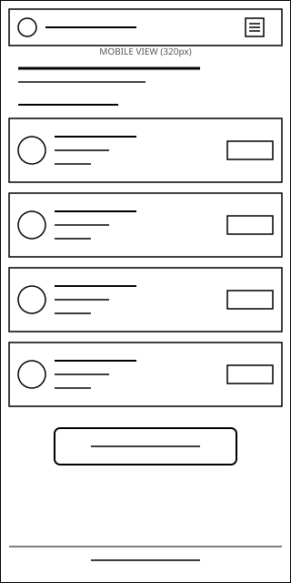
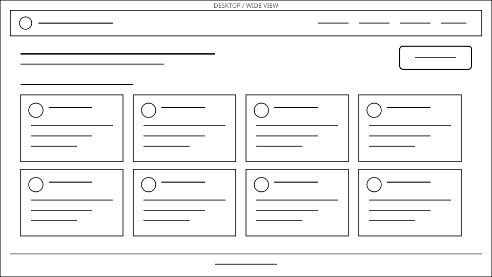

Site Name
CryptoPulse
The name combines "crypto" with "pulse" — the idea of checking the market's live heartbeat at a glance. It's short, easy to remember, and immediately signals what the site is about to a first-time visitor.
Site Purpose
CryptoPulse helps casual investors follow the cryptocurrency market without needing a trading-platform account. The site will:
- Display live price, 24-hour change, market cap, and volume for at least 15 cryptocurrencies, pulled from a public market-data API.
- Let visitors save coins to a personal watchlist that persists between visits using localStorage.
- Explain, in plain language, how to read market data responsibly (what market cap and volume actually mean, and why price alone can be misleading).
Scenarios
- "What is the current price and 24-hour change for Bitcoin and Ethereum right now?"
- "How do I save a coin to my watchlist so I don't have to search for it again next time?"
- "What does 'market cap' actually mean, and why does it matter more than price alone?"
Color Schema
The palette is built around a dark fintech-style navy background with a crypto-standard green/red pair for signaling price movement, plus a light neutral for body text areas.
- Deep Navy #0B1F3A — header, footer, and section background
- Market Green #16C784 — headings, links, positive price changes, buttons
- Market Red #EA3943 — negative price changes, alerts
- Off-White #F5F7FA — page background and card surfaces
- Charcoal Text #1E2329 — body text on light surfaces
Typography
Two Google Fonts are used, each with a distinct role so headings stay easy to scan and body copy stays easy to read at length:
- Space Grotesk (weights 500/700) — used for the site name, all headings, and button labels. Its geometric, slightly technical feel matches a data/finance product.
- Inter (weights 400/600) — used for body paragraphs, list text, and form labels. It stays highly legible at small sizes, which matters for dense tables of market data.
This paragraph is set in Inter, the body font, while the heading above it is set in Space Grotesk, the display font — both are applied live on this page, not just described.
Wireframes
Black-and-white structural sketches of the CryptoPulse home page, showing the header/nav, hero area with a watchlist call-to-action, and the dynamically generated grid of coin cards.

